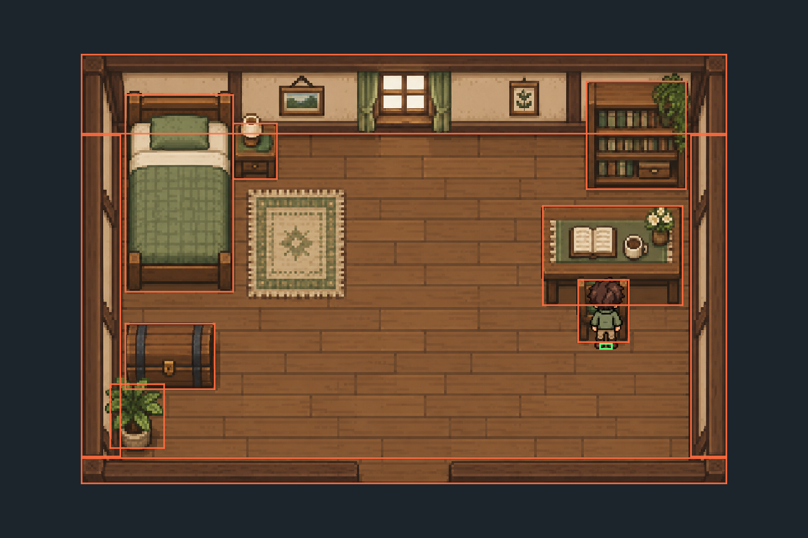

Reference / E
Sources and verification record
What was pinned, what was read, what was executed, and what still requires platform testing.
Primary API references#
This book’s implementation was checked against the installed Odin vendor declarations and the pinned wgpu-native implementation, not reconstructed from older tutorials. The prose and project are original. The following primary sources establish the relevant API contracts; the chapter text contains the working explanations, so external pages are not required to read the book.
- Odin dev-2026-09 release — toolchain and asset names.
- Pinned Odin WebGPU declarations — descriptors, handles, enums, native functions, and thin slice wrappers.
- Pinned native extensions/version and native polling API.
- Pinned SDL3 bindings — boolean returns, C integer pointers, keyboard scancodes, window properties.
- wgpu-native 29.0.1.1 release and implementation source — inline request callbacks, acquisition statuses, presentation, and release semantics.
- Native WebGPU surface documentation — creation, capabilities, configuration, frame ownership. This rolling reference is explanatory; pinned bindings control the code.
- SDL window properties, Metal view creation, and view destruction — native window bridge.
- SDL physical drawable dimensions, logical dimensions, keyboard state, and nanosecond clock.
- WebGPU specification — pipeline, resources, coordinate and execution model. Native surface and callback details differ from the JavaScript API.
- WGSL memory layout and stage interfaces — uniform layout and shader IO.
- SDL 3.4.16 release — reproducible runtime baseline.
- Pinned Odin image decoder declarations and WGSL textureSample — native RGBA decoding and shader sampling. QueueWriteTexture, sampler, texture layout, and copy/readback descriptors were also inspected in the installed matching WebGPU bindings.
Verification performed#
The verification.json record distinguishes the original native execution checks from the later editorial checks. A prose revision does not imply that the earlier GPU captures were repeated. The record includes automated site/source checks and locally executed native checks. See its test descriptions for the difference between compiling, exercising real presentation, and manual input/visual testing.
| Check | Recorded result |
|---|---|
| Static pages and paths | 31 pages; 1930 local links/assets; 124 exact source blocks |
| Projects reconstructed from the book | 23 built from HTML listings and included artwork on darwin/arm64; in-book tests passed at chapters 21–23 |
| Native checkpoint builds | 23 compiled and linked on darwin/arm64 |
| Movement tests | 3 passed |
| Actual intermediate presentation | Chapters 7–16: 12 successful presents each |
| Foundation native presentation | 100 successful presents, two resize requests, final position (520,100) |
| Animated room presentation | 450 successful presents; two resizes; chair/wall contact; F1 overlay; actual framebuffer captures |
| Room/animation unit tests | 11 passed |
| Offline browser checks | 434 page/viewport checks; 360, 390, 768, 1024, 1280, 1440, 1680px; scripts-disabled reading passed |
The native test environment is macOS arm64, Odin dev-2026-09:a2fb372b7, SDL 3.4.16, and wgpu-native 29.0.1.1. Each distinct foundation rendering checkpoint, 7 through 16, completed 12 successful surface presents. The preserved checkpoint-18 harness counts 100 actual successful SurfacePresent calls, requests two window resizes, checks the final configured physical extent against SDL, and feeds 100 deterministic updates into the actual movement procedure. Its final position is (520,100), from a starting value of (120,100). Initial Occluded results are skipped and are not counted as presented frames. This is not a simulated WebGPU implementation.
The extended room harness completes 450 successful presents with actual room and animated-player PNG uploads, two size requests, scripted chair/north-wall collisions, and a synthetic SDL F1 press. It checks that all four walk-frame columns were presented and the final state is a north-facing blocked idle. Framebuffer readback captures below show actual GPU output, not a browser reconstruction. The screenshot harness alone enables surface CopySrc when supported and waits for mapped readback; these test-only features do not add synchronization or requirements to the canonical renderer. Automated launches intermittently remained occluded and timed out; the bounded harness now repeats a window visibility request while waiting for its first image. The final run passed. Skipped iterations were never counted as successful frames.


Compilation alone cannot establish that WGSL validates on the backend: shaders are embedded text until runtime. The native smoke check supplies that additional evidence. Scripted movement checks the update-to-uniform/render path; it does not establish physical keyboard delivery, visual pixel correctness, or every minimize/loss path. Cross-platform runtime testing remains a documented limitation. The README gives commands for rerunning checks.
Manual acceptance pass#
- Run project/src, hold each WASD and arrow direction, verify release stops motion and opposite keys cancel.
- Compare diagonal and cardinal speeds; the diagonal should not be faster.
- Resize smaller and larger, minimize and restore, and check that the character keeps proportions and stays reachable.
- Move between displays with different scaling if available; compare logical size with physical drawable size.
- Close normally and confirm there are no validation diagnostics. If a failure occurs, retain the first labeled error message.
Rebuilding the book#
The static HTML is already generated. Node is needed only to rebuild/check authoring output. authoring/source.mjs constructs exact snapshots with asserted replacements. Chapter excerpts come from those snapshots, each chapter includes the full end state and an exact patch, and the final-source appendix is generated from the canonical final snapshot. The verifier compares the resulting files and HTML source blocks byte-for-byte and checks relative paths/fragments. No code snippets are fetched at reading time.